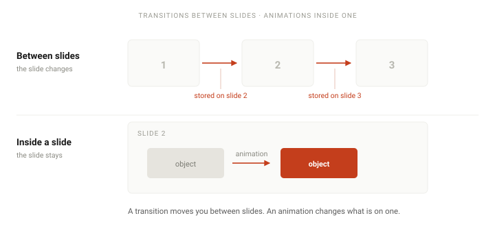

To add a transition in PowerPoint: select the slide you are arriving at, open the Transitions tab, and pick an effect from the gallery. Use Effect Options for direction, Duration for speed, and Apply To All to give every slide the same one. The single thing worth knowing before you start: a transition is stored on the slide being entered, not the one being left — which is why the effect you set on slide 1 never plays.

Step by step
-
Select the slide you are arriving at
In the thumbnail pane on the left, click the slide that should animate into view. This is the step people get wrong, and it is worth reading twice.
A transition is stored on the slide being entered. If you select slide 3 and apply Fade, you have not made slide 3 fade out — you have made slide 3 fade in as you leave slide 2. The two are easy to confuse because the effect you see happens in the gap between them.
-
Open the Transitions tab
The Transitions tab sits in the ribbon between Design and Animations. It appears whenever a slide is selected and shows the gallery of transitions that can be applied to that slide.
Only one transition per slide. If a slide already has one, picking a different effect replaces it rather than adding to it. There is no way to stack two.
-
Choose an effect from the gallery
Effects are grouped into Subtle, Exciting and Dynamic Content. Clicking one previews it immediately on the slide. A down arrow to the right of the gallery opens the rest of it.
For a business deck, Subtle is almost always the right group. Fade and Push are the two that survive contact with a real audience; the Exciting group is where a presentation starts to look like a template rather than a document.
-
Set the direction with Effect Options
Effect Options sits next to the transitions gallery, and what it offers depends on the effect you chose — for Push it picks the direction the new slide arrives from, for Wipe it picks the edge it starts at, and for Morph it controls what gets matched. Microsoft's own wording is that many, but not all, transitions can be customised: if the button is dimmed, the effect you picked is one of the ones with nothing to configure.
-
Set the Duration
Duration, in the Timing group, controls how long the transition takes. PowerPoint picks a default that varies by effect, and it is usually slower than it needs to be.
Around half a second to three-quarters of a second reads as smooth. Past two seconds the audience stops reading it as motion and starts wondering whether the laptop has frozen — which is the opposite of what the transition was for.
-
Choose how the slide advances
Two checkboxes under Timing decide when the slide leaves:
On Mouse Click — waits for you. The default, and the right choice unless you have a reason.
After — advances on its own once the given time has passed.You can tick both. If you do, the slide advances on your click or after the time runs out, whichever happens first. Setting After without meaning to is the usual reason a deck starts running away during a presentation.
-
Apply it to every slide
Apply To All, in the Timing group at the right-hand end of the tab, copies the current transition and its timing to every slide in the presentation. It is the fastest way to make a deck consistent.
This overwrites what is already there. If three slides had custom transitions, Apply To All flattens them along with everything else. If you have done work you want to keep, save first.
-
Check it in Slide Show mode
Selecting an effect previews it on the slide, and Preview replays it with all your settings applied — Microsoft's wording is to select a transition to see a preview. That preview is not the real thing, though. Press F5 to start from the beginning, or Shift + F5 to start from the current slide, and move between slides to watch it properly.
Remember the order while you test: the transition plays when you arrive at a slide, so you will not see slide 3's transition until you leave slide 2.
The part everyone gets wrong
If there is one thing worth taking from this page, it is this. A transition belongs to the slide you are moving to, not the slide you are moving from. Microsoft's own documentation states it as: a transition determines how a slide enters and how the previous slide exits.
Three consequences follow, and each one produces a support question somewhere:
- To remove the effect between slides 2 and 3, select slide 3. Selecting slide 2 and clicking None will remove the effect between slides 1 and 2 instead, which is not what you wanted and is confusing to watch happen.
- A transition on slide 1 never plays at the start. A slide show opens directly on slide 1 — you never arrive at it, so there is nothing to animate. It will play if you later navigate back to slide 1 from another slide, which makes it look intermittent rather than absent.
- Apply To All gives every slide the same transition, including slide 1. So the one slide where it cannot be seen still gets one. This is harmless, but it is why the thumbnail pane shows a transition icon on a slide that appears to have no effect.
The thumbnail pane tells you which slides have a transition. A small star-like icon appears next to the slide number. It is the fastest way to audit a deck someone else built, and to spot the slide where an effect was applied by accident.
Morph: the one worth learning
Morph is a transition, and it is the only one on the list that does something you cannot achieve any other way. Instead of a canned effect, it compares two slides and animates the difference — a shape that moves, grows or changes colour between one slide and the next appears to travel, rather than cutting.
How to build a Morph transition
-
Build the first slide
Put the object where you want it to start — a shape, a picture, a line of text. This is the state the audience sees first.
-
Duplicate the slide
Right-click the thumbnail and choose Duplicate Slide, or press Ctrl + D. Duplicating matters: Morph pairs objects by position and type, and a duplicate guarantees the two slides share them.
-
Change the object on the duplicate
Move it, resize it, recolour it, or delete it. Whatever you change is what Morph animates. Do not add a new object unless you also have something for it to pair with — an object with no counterpart simply appears at the end.
-
Apply Morph to the second slide
With the duplicate selected, open Transitions and choose Morph. Then use Effect Options to choose between Objects, Words and Characters — Words and Characters are what make individual letters rearrange rather than the whole text box sliding.
Where Morph goes wrong
- Charts do not morph — they cross-fade. A chart on both slides will dissolve from one into the other rather than animating its bars. This is the most common surprise, and there is no setting that fixes it.
- Nothing matched, so it fades. If the two slides have no object in common, Morph has nothing to pair and quietly falls back to a cross-fade. It looks like Morph is broken; it is working as designed.
-
Morph is greyed out or absent. Almost always Compatibility Mode — the
file is in the old
.pptformat. File → Info → Convert, or save as.pptx. Creating Morph needs PowerPoint 2019 or Microsoft 365; PowerPoint 2016 can play one but not create one. -
The wrong objects pair up. Morph guesses which shape on slide A belongs
with which on slide B, and it sometimes guesses badly. You can force the pairing: open
Home → Select → Selection Pane on Windows (Home → Arrange →
Selection Pane on Mac) and give the two objects the same name, starting with two
exclamation marks —
!!Shape1on both slides. Morph will only pair an object named this way with another named the same way.
Transitions versus animations
These are the two effects people mix up most, and the confusion has a cost: you apply one, cannot tell whether it worked, and conclude PowerPoint is broken.
- A transition applies to a whole slide and plays between two of them. One per slide, set on the Transitions tab, stored on the slide being entered.
- An animation applies to an object and plays within one slide. As many per slide as you like, set on the Animations tab, stored on the object itself.
Neither plays properly in the normal editing view: you get a one-off preview when you apply it, but both need Slide Show mode before you know how they will really look. If you are trying to make bullet points appear one at a time, that is an animation rather than a transition; how to add animation in PowerPoint covers it.
When it does not work
- Nothing happens on slide 1. Expected — see above. The show opens on slide 1, so there is no entry to animate.
- No transitions play anywhere. Check Slide Show → Set Up Slide Show and make sure Show without animation is unticked. That box is there for presenting a deck without any effects, and a deck with it ticked behaves exactly like one whose transitions have all vanished.
- The effect is on the wrong slides. Either it was applied to the slide being left rather than entered, or Apply To All overwrote per-slide choices. The thumbnail-pane icons will show you where the transitions actually are.
- The deck advances on its own. A time is set under After in the Timing group, probably from Apply To All. Untick it, or use Slide Show → Set Up Slide Show to check whether rehearsed timings are being used.
- It stutters. Long durations on a large deck, or hardware acceleration. Try File → Options → Advanced → Display and toggle hardware graphics acceleration, then test again.
- Morph shows a fade instead of moving. The two slides share no object in common, so Morph has nothing to pair. Duplicate the first slide and edit the copy rather than building the second one from scratch — the Where Morph goes wrong list above covers the rest.
Questions
- Why doesn't the transition on my first slide play?
- Because a transition runs when you enter a slide, and a slide show opens directly on slide 1. You never enter it, so there is nothing to animate. A transition set on slide 1 only plays if you later navigate back to it from another slide — which makes the behaviour look intermittent rather than absent.
- How do I remove a transition from every slide at once?
- Select a slide, choose None in the Transitions gallery, then click Apply To All. Alternatively, select every slide with Ctrl + A in the thumbnail pane or in Slide Sorter view and choose None once.
- Why is Morph greyed out or missing?
-
Almost always Compatibility Mode, which happens with decks saved in the older
.pptformat — File → Info → Convert, or save as.pptx. Creating Morph also needs PowerPoint 2019 or Microsoft 365; PowerPoint 2016 can play one but not create one. And a single-slide deck has nothing to match between, so Morph has no work to do. - How long should a slide transition be?
- Half a second to a second for most business presentations. A transition exists to signal that the slide changed; the audience should not have time to study it. If someone notices the transition rather than the slide, it is too long.
- Do transitions survive exporting to PDF or video?
- Not to PDF — a PDF is static pages, so every transition is dropped and the deck becomes a plain sequence of slides. Exporting to video does keep them, because the video is a recording of the show actually running, including the timing you set.
Official references
- Add, change, or remove transitions between slides Microsoft's reference for the Transitions tab, Effect Options, duration, sound and Apply To All
- Morph transition: Tips and tricks What Morph matches, why charts cross-fade, and the !! naming trick for forcing a pairing
- Set the timing and speed of a transition The Timing group, which is where Duration, Sound, Advance Slide and Apply To All actually live
- Use the Morph transition in PowerPoint The duplicate-the-slide workflow, and which versions can create a Morph rather than only play one